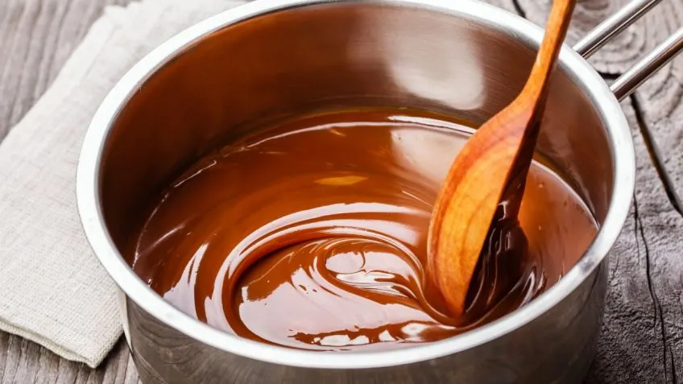
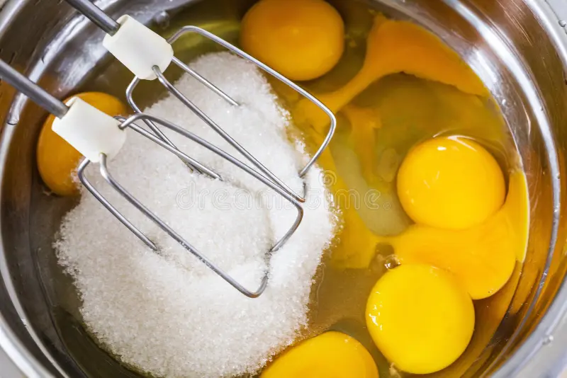
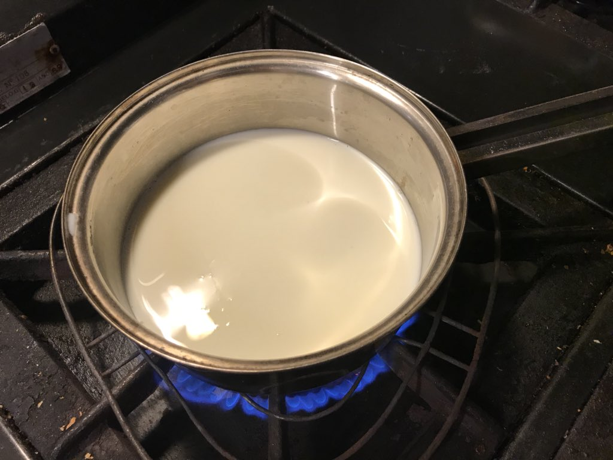
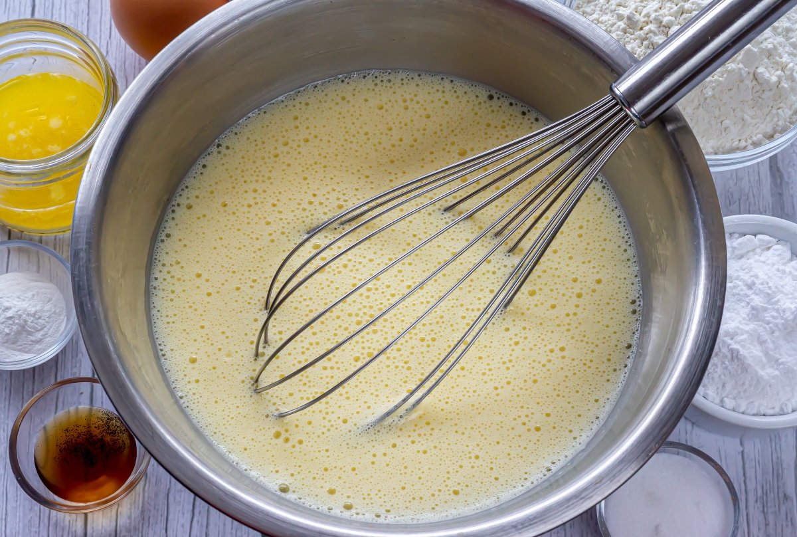
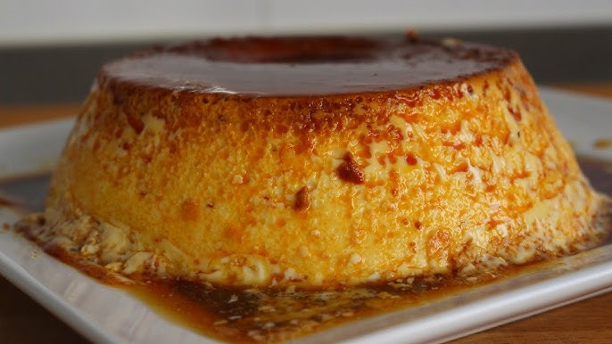
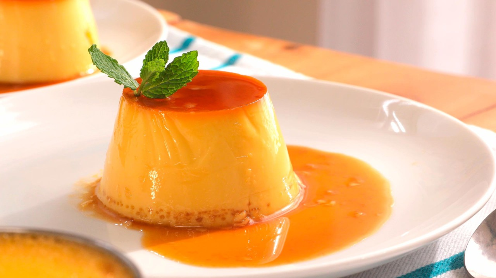

- Si decides usar caramelo, cubre el fondo de los moldes con caramelo líquido.

- En un bol, bate los huevos y el azúcar hasta que estén bien mezclados.

- Calienta la leche en una cacerola sin dejar que hierva.
- Añade la esencia de vainilla a la leche caliente.

- Vierte la leche caliente sobre la mezcla de huevos y azúcar, mezclando suavemente.

- Vierte la mezcla en los moldes previamente preparados con caramelo (si lo usaste).

- Coloca los moldes en una bandeja con agua caliente y hornea a 180°C durante 45-50 minutos.

- Deja enfriar los flanes a temperatura ambiente y luego refrigéralos durante al menos 2 horas.
- Desmolda los flanes y sírvelos.
